真夏の土佐である。
高知県といえば闘犬、カツオ、桂浜、沢田マンション…と、行きたいところは山ほどあるのだが、まずは
今回最大のミッションをクリアせねばなるまい。
実は当サイト珍寺大道場では由々しき問題を抱えていた。
というのも高知県だけが永きにわたって珍寺エントリーがゼロ、の
珍寺空白地帯だったのである。
おおお、もう十何年もこんなサイトをやってて日本中をウロウロしてきたのに、何たる不覚！
これでは大殿様、山内容堂公に申し訳が立たないではないか！（スミマセン龍馬伝に夢中になっていた頃の話なもんで）
というわけで地元の方々にしてみればどうでもいい、というか勝手にしろ、というかむしろ来るな、というハナシだが、高知県を珍ゼロ県から開放すべく
高知県の珍寺番長格である室戸青年大師へと向かったのである。
…実はこの大師像、今までも徳島、高知両方面から何度か訪問のチャンスはあったのだが、いかんせん
何処から行ってもメチャクチャ遠いので二の足を踏んでいたのだよ。
高知市内からひたすら海沿いの道を走ること80数キロ、精神状態が段々ミニマルになりかけた頃、ようやく室戸岬に到着した。
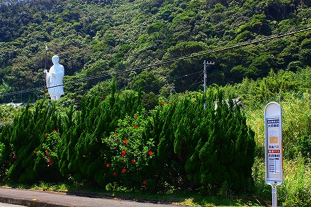
室戸岬といえば台風シーズンの天気予報でよく耳にする場所だが、それ以外にも白亜紀の地層が見られるジオパークとして地質マニアの方々には有名だそうで。
当サイト的にはこの室戸青年大師、そして何より弘法大師が悟りを開いたという
御厨人窟、さらには四国八十八カ所の
24番最御崎寺などが必見のスポットといえよう。
他にも廃墟界の有名物件などもあり、途中に見どころが少ない割には行けば行ったで結構見どころの多い場所なのだ。
で、
室戸青年大師、である。
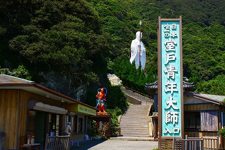
修行時代の弘法大師を白亜の巨像に仕立てたものである。
修行大師の巨像としては日本唯一、ということなのだろうか。
説明書きによれば高さは台座込みで
２１メートル、建立は
昭和59年。
そこには建立の由来が書かれていて、要約すると弘法大師が悟りを得た御厨人窟に近いこの地に大師像を建立し、大師の教えを現代に伝えよう、という趣旨のようだ。
入り口には
派手な仁王像がお出迎え。
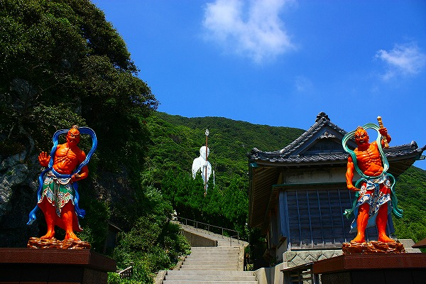
この仁王様、どっかで見たことがあると思ったら、
江ノ島の最福寺の門前にある仁王さんに瓜ふたつだった。
てなわけで階段を上り大師サマの待つ丘の上へ。ちなみにこの日は日向では４０度を越える猛暑で、数十メートルの階段を上りきっただけで気を失いそうになった。
いよいよご対面。周辺に建物がないためスケール感がおかしくなる。
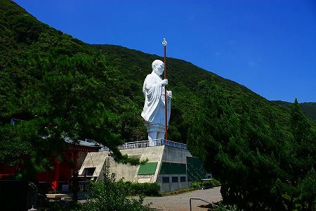
見上げれば
厳しい表情の青年大師サマが立っている。
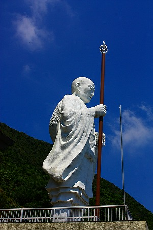
今までの経験上、弘法大師像、特に大型の大師像って何となく
穏やかな表情のものが多かったような気がするので、少し意外だった。
やはり修行中だけに厳しい表情なのだろうか。
台座にはブロンズのレリーフが掲げられており、大師の波乱の生涯を説明している。
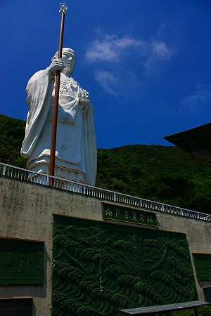
勿論一番ど真ん中は遣唐使として入唐を果たしたエピソード。
一番左側にこの地で悟りを開いた明星来影、つまり
金星が口の中に飛び込んじゃった伝説が描かれている。
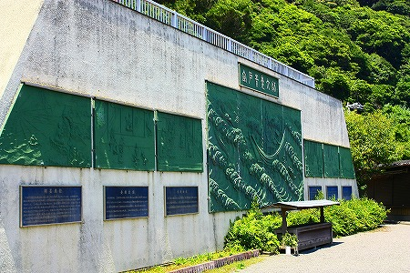
さらに万濃池の改修などの土木的な業績も表されている。
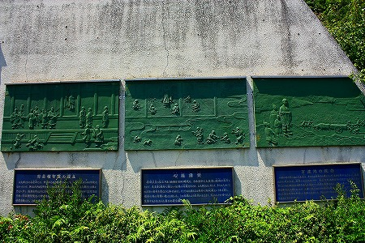
あまりの暑さに上を見ただけでクラクラします。
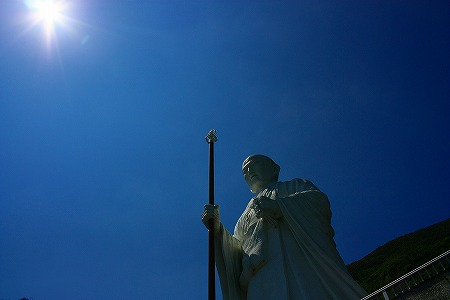
目の前は海。
このバス、何処から来て何処へ行くのだろう…。
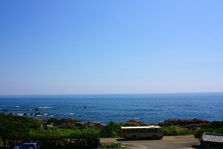
右へ行けば高知市まで８０キロ、左に行けば徳島市まで１２０キロ。そんな場所です。
大師サマを過ぎると隣に小さな建物があり、そこから
台座の中に入ることが出来る。
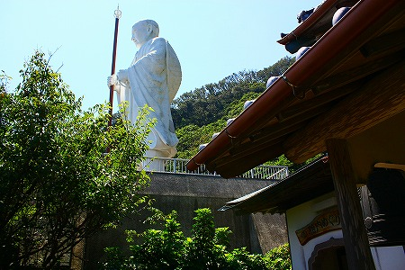
中に入ってみる。
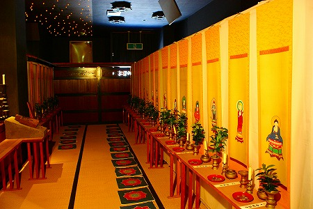
そこは四国八十八ヶ所の本尊の描かれた掛け軸が並んでおり、
プチ霊場となっていた。
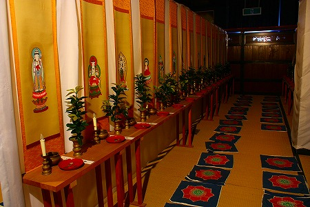
コレに関して特にコメントは無いが、とにかく外に比べて涼しくて、それだけで極楽のようでした…。
しかし驚いたのはその先である。
ジャ〜ン！
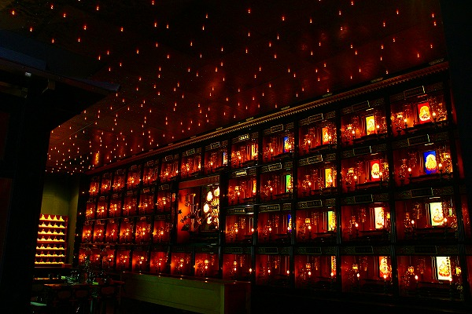
煌びやかな電飾仏陀ワールドが現れた。
釈迦像を中心に繰り広げられる光の曼荼羅。
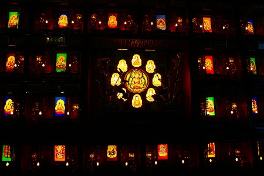
4段14列、真ん中が抜けているので都合52個のブースの中にはそれぞれ菩薩のプレートが並んでいる。
まるで
菩薩サマの住んでいる団地のようだ。
最早官能的ですらあるこの菩薩団地の美しさにただただひれ伏すばかりであった。
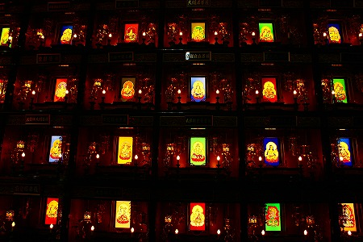
ちなみに訪問時、参拝客は数組程度だったが、果たしてこんなにゴージャスな空間を維持し続けて採算取れるのだろうか…。
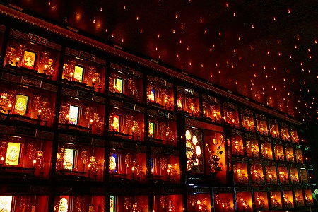
どことなく台湾のお寺を思わせる雰囲気。
あまりの荘厳さにうっとりしてしばし時間を忘れてしまったよ。
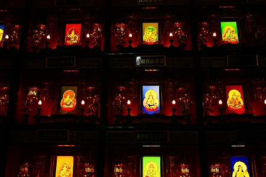
ああ、
四国の果てにこんな素敵な幻想宮があるとは。
苦労して来た甲斐があったぜよ。
両サイドにはミニ大師サマがずらりと。
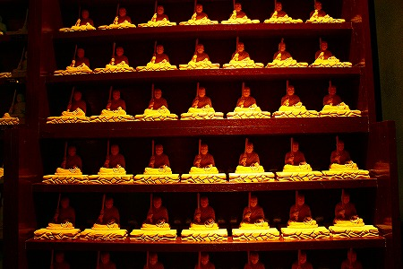
で、台座の階上に出る。
そこは青年大師サマの直下だ。
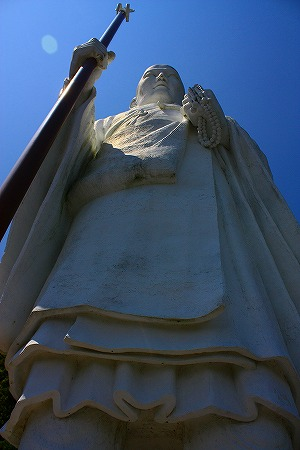
足元に着目。
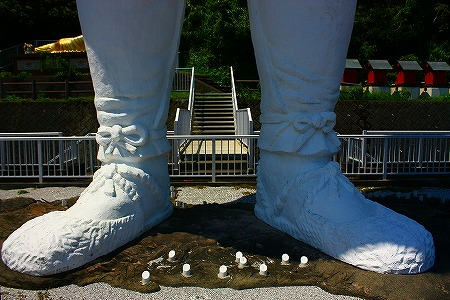
ぬあんと
四国全土の上に立っていたのだ。
コレだけのサイズでは珍しい二足直立タイプ。ただし正確には杖を持っているので三点支持タイプ。形状としては
蒲郡の弘法大師像に似ている。
四国全土の所々に白く
マーキングがなされている。言わずと知れた
四国八十八カ所の札所の位置だ。
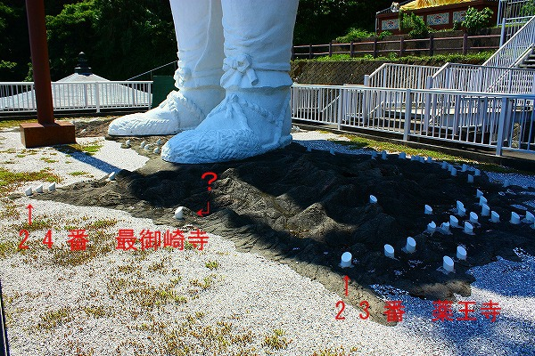
２３番の薬王寺と室戸岬にある２４番の最御崎寺の間は札所が全くない地域だが、何故か途中に白いマーキングがなされている。
恐らく番外霊場の鯖大師だと思う。
23番と24番の間は約100キロ。
思えばお遍路さんはこんな何もないところもず〜〜〜〜〜っと歩くんだよな〜。
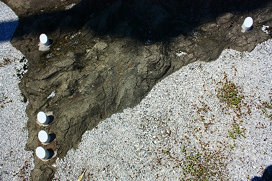
エアコンの効いた車で来ていながら遠いとか何も無いとか文句ばっかり言って、
ほんっとにスミマセンでした！
大師サマの正面には太平洋が広がっている。
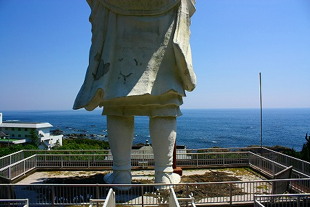
視線の先には海しかない。この先、陸地は南米大陸の西海岸までない。
大師サマの後ろには
金ぴかの涅槃像が横たわっていた。
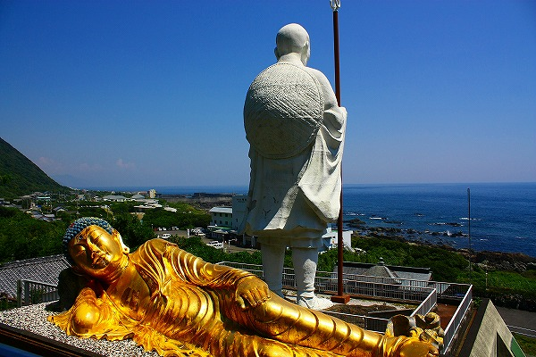
本邦初、金泊張り（ママ）露座涅槃像である。
ココで疑問なのは何故
寝釈迦サマと大師サマを背中合わせにしたのか、という点。
これじゃあ仲が悪いというより倦怠期の夫婦みたいじゃないか。
ただ、
最大限に好意的な見方をすれば人生の終焉を迎えつつある姿を表した寝釈迦像と修行中で無限の未来に想いを馳せている修行大師像とをあえて対比させたかったのかも知れないですね。
ただどうしてもジュリーの
”寝たふりしてる間に〜出て行ってくれ〜”が浮かんじゃうのは単に私がオッサンだからなのでしょうか？
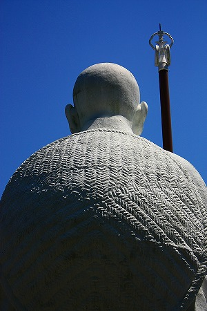
やはり最終的には背中の笠を投げるのだろうか？
ジュリーのように。
帰りは外階段をトボトボと下りていくのです。
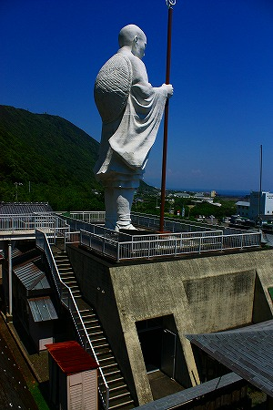
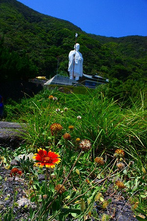
帰りがけ出口の近くで見かけた小さな洞窟。
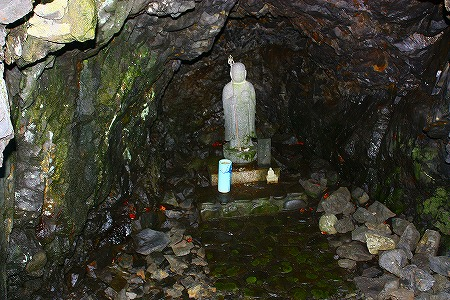
所々赤いモノが見えますか？
これ全部カニなんです。カニ洞窟。
この大師像からいくらも離れていないところに御厨人窟と神明窟がある
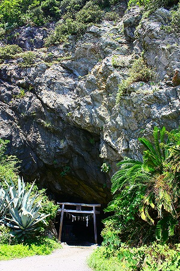
こんな何もない洞窟で何年も修行していたのかー。
洞窟の中から外を見れば、空と海しか見えない。
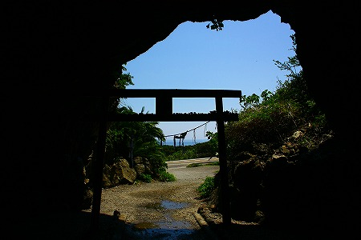
ちょっとアレな人が周りの人などお構いなしにチャネリングだかヒーリングだかを始めちゃったのであまり長居が出来ませんでした。
自分の幸せしか眼中にない人にはホント困ったもんです…。
ちなみに神明窟の方は落石のため現在は立ち入り禁止になってしまったとか。